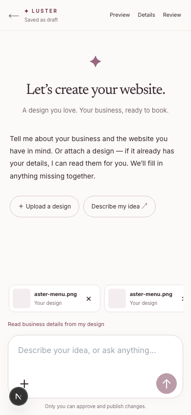
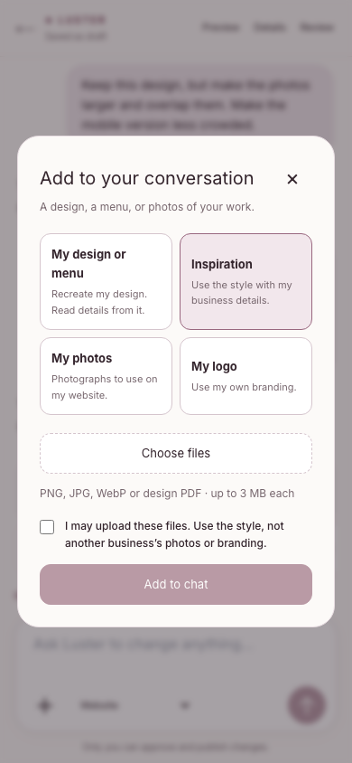
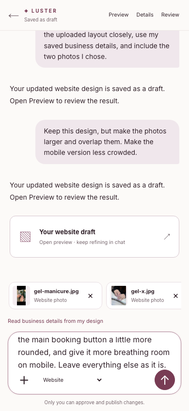
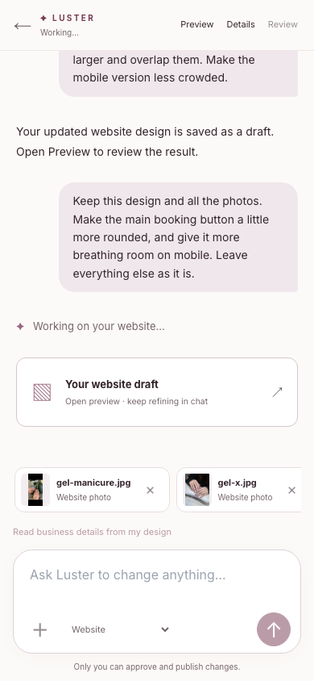
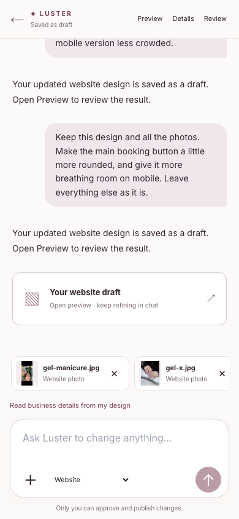
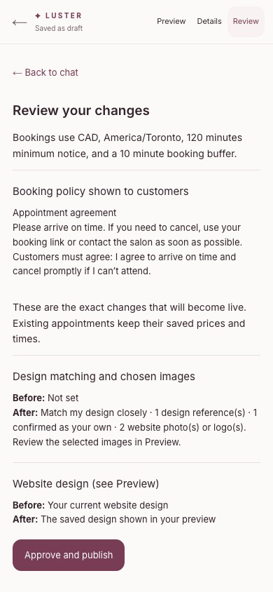
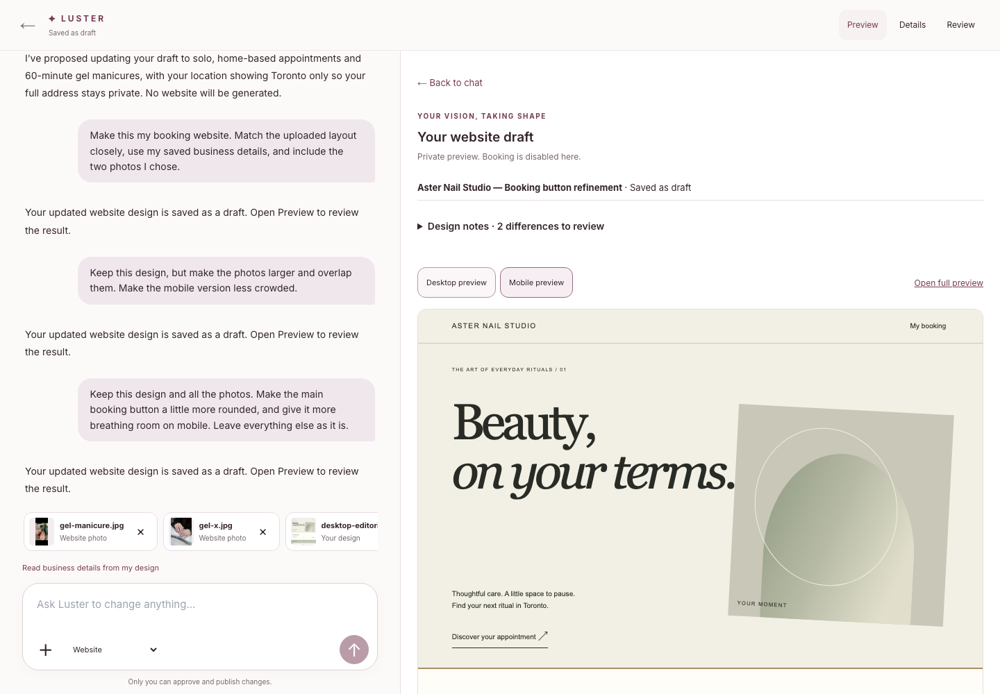

One conversation. Your website.
Actual screenshots of the isolated Luster test application. The owner attaches references and talks to Luster in one place; preview, business details and exact approval open on demand.

New owner: one conversation and a bottom composer.
Attachment choices appear only when requested.
A real owner request on the hosted test application.
Visible progress during generation.
Astra saved a new draft; no manual source edit.
Exact review stays separate from conversation.
Desktop preview opens alongside chat. The generated example remains connected to Luster’s booking data.This UI checkpoint did not republish either sample or create additional appointments. Existing public booking navigation was checked independently. See README for the remaining broader release work.